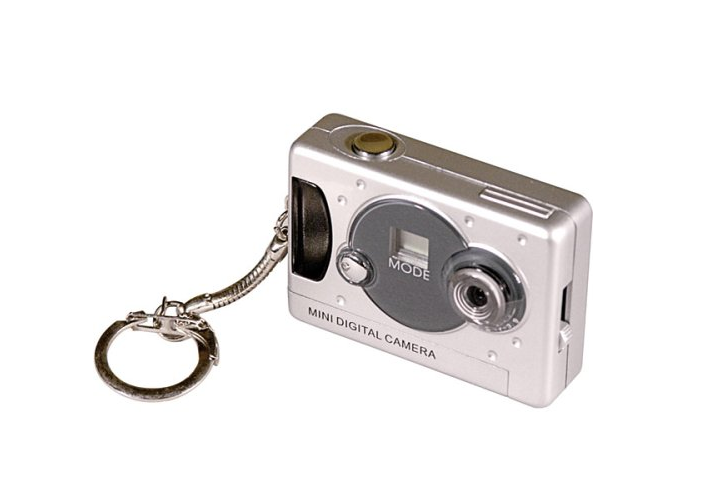
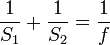
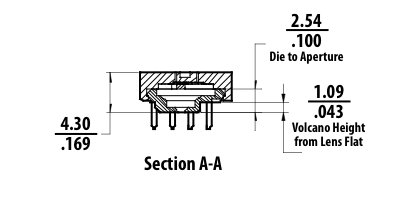

Material costs for the field device must not exceed 300 euros. Computers and equipment outside of the 300 euros can be used for non-field activities (such as downloading and manipulating data captured in-field), but at the time of capture a graffiti writer should have no more than 300 euros worth of equipment on him or herself.
Let's make a list in US Dollars, so I don't have to convert back everything I bought from US suppliers. We've got ~420.39$US to spend, so let's spend it.Basic theory of operation goes like so: it's an optical mouse that knows how it's being tilted. We need to make sure that the mouse can read properly off the wall so we need to illuminate the wall properly, hence the ultra-bright Red LED. This one is 640nm, which is close enough to the 680nm that the ADNS5050 really wants. If you find a really bright 680nm LED that'll work even better. It needs to be big and bright though because we're working with a much larger area than the optical mouse is used to working with.
We point the mouse sensor and lens and LED at the wall and we get tracking. Easy right? Not really. There's a lot of fussing around to get the lens mounted correctly and aimed correctly at the optical mouse senors actual optical sensor. I got a lens that was f3.8, which is pretty perfect for what I want to do. You might get a differetn one, but if it's possible, stick with f3.8. Some of the keychain cameras come with f4.7 which isn't really going to work as well. We want something close up.
Making the lens mount is somewhat tricky and requires that you learn a little bit about the lens law depending on what the foal length of your lens is. As I mentioned, I'm using a f3.8 lens pulled out of a camera like the one shown below:

The lens law looks like this:
You can translate that as: 1/distance from lens to focal plane + 1/distance from lens to object = 1/focal length.
What that means is that whatever your lens is, f3.8, f4.9, whatever, you need to balance the equation with the reciprocal of the distance of the object to the lens plus the reciprocal of the distance of the lens to the focal plane. I've got mine set up a 5.25mm distance from between the lens and the ADNS5050 so that I can focus on things around 2.5cm away from the lens (do the math if you like). Whatever lens you decide to use, just make sure that the radius of the focal area is small. Those little keychain cameras are perfect, larger lenses, like the ones from the PS3 eye, aren't going to work. NOTE: the actual location of the optical sensor in the ADNS5050 is 2mm down from the top of the optical mouse sensor. See the picture here:

So your actual distance fromI cut the lens mount and the ADNS5050 holder out of 2mm acrylic on a cheap shitty laser cutter. Works like a dream. The illustrator file is included. The difficulty is positioning the lens just right so that it's 5.25mm from the optical mouse sensor.
The lens mouse illustrator files are included as lens_mount.ai
The body of the field recorder is shown in shape_pattern.ai
It's fairly rough right now, v2 is going to have a better shaped body.
The Teensy sits on the body, with all the wiring and a 9V battery. The lens+ADNS assembly slots into the little cutout at the end. Right now I have it so it's fit tight with the 2 sheets of 2mm acrylic that make up my assembly, but whatever holds it perpendicular to the wall and doesn't allow it to move is just fine. The body is then slid over the bottom of the spray paint can and taped into place (tape not neccessary, but recommended).
The capacitive sensor uses a piece of foil to read the touches when the user is actually making a line. You should put near the top of the can so that it's easy to spray and signal to the recorder that you're making a line at the same time.
Most of the main application is contained in libraries. Everything in /libs goes in your Arduino/libraries
You need to add one method to the WString class to get it work properly though:
char* c_str() { return _buffer; }
this mimics the c++ string method. The WString.h lives where Arduino application lives, so Arduino/hardware/teensy/cores on Windows or Arduino.app/Resources/Java/hardware/teensy/cores on OSX. You can either add that manually or copy the files from /additional
There are two extra config applications to help you position the lens correctly, an Arduino application and a Processing application. The P5 app just reads the pixels from the ADNS5050 so you can focus the lens, check your positioning and the distance from the lens to the mouse sensor.